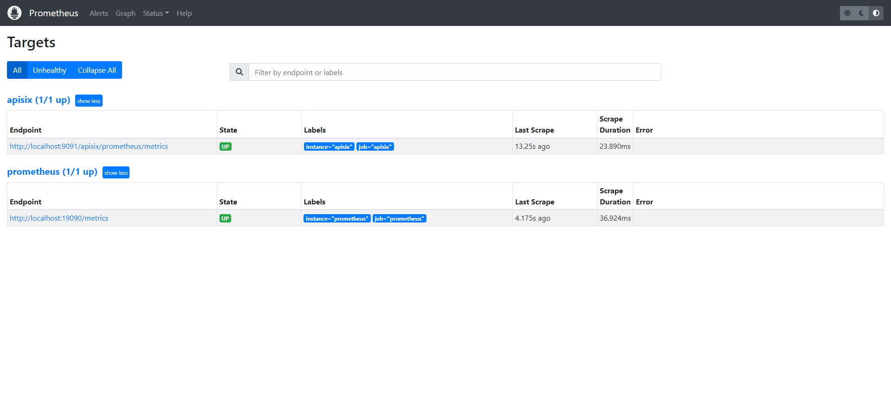
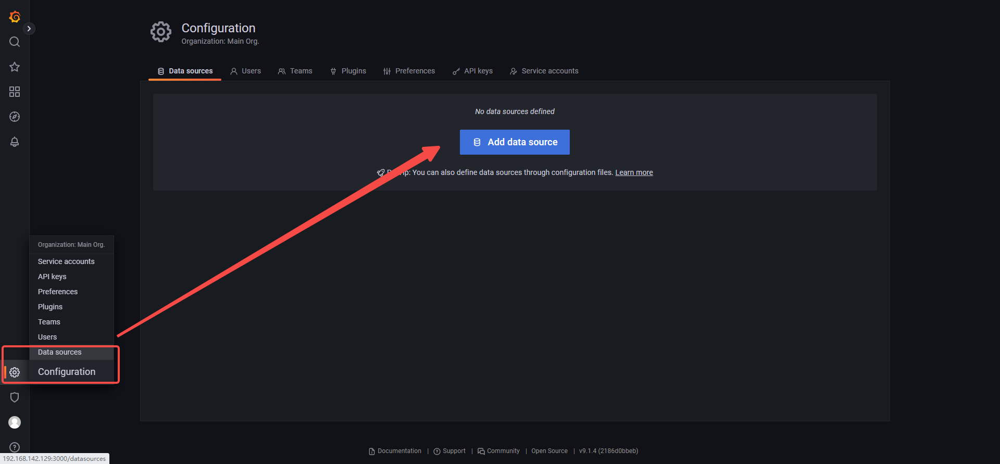
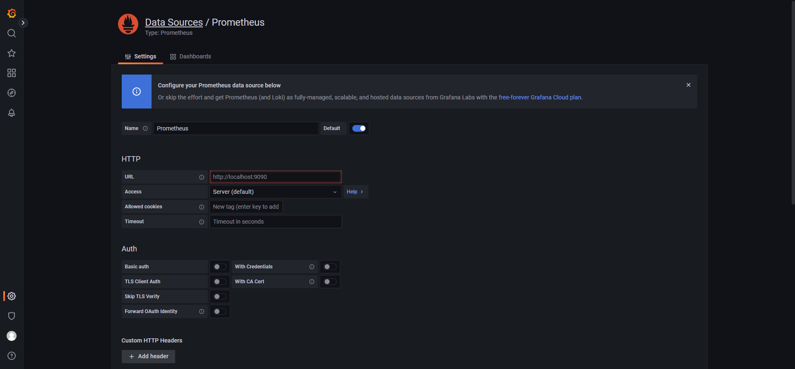
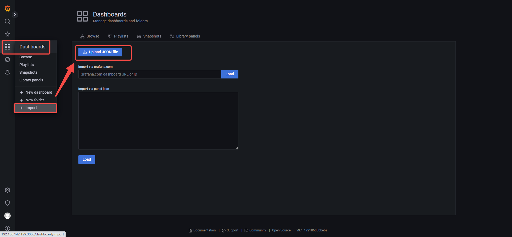
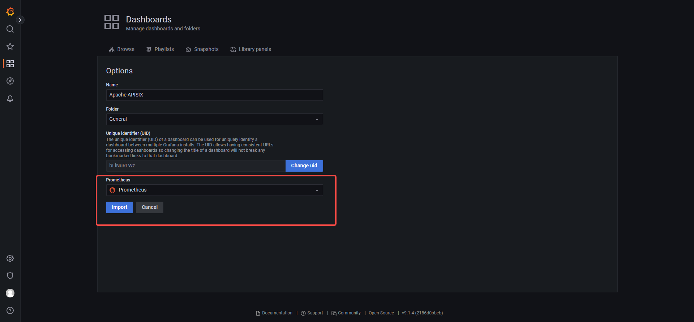
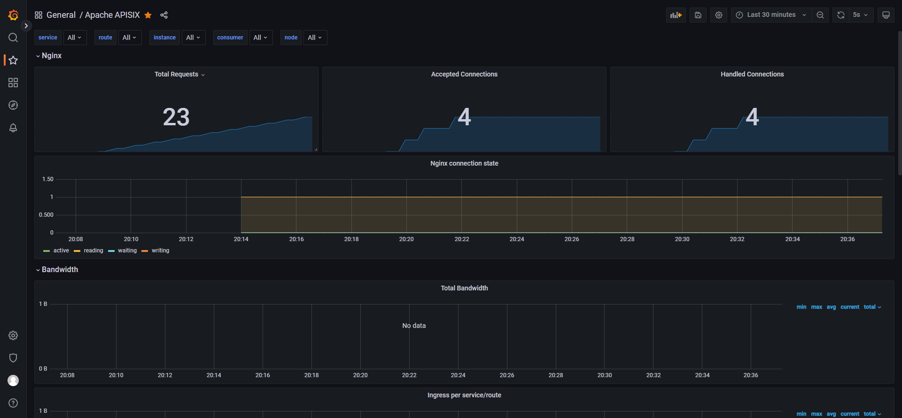

APISIX-2.13.3-CentOS_7-单节点部署 0. 前言
APISIX服务、ETCD、Grafana使用docker容器部署
APISIX-Dashboard使用yum方式安装
ETCD版本：3.4.20
APISIX版本：2.13.3-centos
Grafana版本：9.1.4
Prometheus版本：2.37.1
APISIX-Dashboard版本：2.13.3-centos
APISIX官方部署教程：
单节点部署方式仅用于功能体验，不适用于真实生产环境；本样例使用较为快捷的方式安装，意于测试apisix的基础能力
1. 安装Docker
2. 安装APISIX服务
1 2 3 4 5 6 docker run -d \
1 2 3 4 5 docker run -d \
1 2 3 4 5 apisix: admin_key: - name: admin key: edd1c9f034335f136f87ad84b625c8f1 role: admin
3. 安装APISIX-Dashboard服务
1 sudo yum install -y https://github.com/apache/apisix-dashboard/releases/download/v2.13/apisix-dashboard-2.13-0.el7.x86_64.rpm
编辑文件：/usr/local/apisix/dashboard/conf/conf.yaml
注释掉 allow_list下面的IP地址默认配置项
1 2 3 4 33 allow_list: 34 35 36
1 systemctl start apisix-dashboard.service
4. 安装Prometheus 4.1 下载&安装&运行
1 docker pull prom/prometheus:v2.37.1
1 docker run -d --name=prometheus -p 9090:9090 prom/prometheus:v2.37.1
执行后会报错9090端口已经被占用，查了一下使用情况：
1 2 3 4 5 6 7 8 9 10 11 12 13 14 15 16 [root@localhost data]# netstat -anp | grep 9090
是apisix主服务占用了9090端口，因此需要修改prometheus的web服务监听端口为19090；
注意：执行前删除刚刚创建失败的prometheus容器，上面一步也可以使用 docker pull 拉取镜像不创建容器；
1 2 3 mkdir -p /usr/local/prometheus/data
1 2 3 4 5 6 7 8 9 10 global: scrape_interval: 60s evaluation_interval: 60s scrape_configs: - job_name: "prometheus" static_configs: - targets: ["127.0.0.1:19090" ]labels: instance: "prometheus"
注意：上面的 job_name:"prometheus" 配置只是一个采集目标端口，用于自检，并不是prom-web的开放端口配置。后续可以在 http://<ip>:<port>/targets?search= 中看到该配置的效果；
1 2 3 4 5 6 7 docker run -d \
web访问地址：http://<ip>:19090
如果不能访问看【设置防火墙】一节，放通19090端口给外网访问
4.2 APISIX接入Prometheus
1 2 3 4 5 6 7 8 scrape_configs: ...... - job_name: "apisix" metrics_path: /apisix/prometheus/metrics static_configs: - targets: ["localhost:9091" ]labels: instance: "apisix"

5. 安装Grafana 5.1 下载&安装&运行 1 docker run -d --name=grafana -p 3000:3000 grafana/grafana:9.1.4
1 systemctl restart docker
找到grafana的容器重新运行
web访问地址：http://<ip>:3000
初始账号密码：admin/admin
5.2 Grafana接入Prometheus
配置apisix监控样式：


导入apisix-dashboard样式json文件



5.3 Grafana嵌入APISIX
进入容器，修改grafana配置，使之运行匿名登录及嵌入浏览
1 docker exec -it --user root <容器id> /bin/bash
1 2 3 4 5 6 allow_embedding = true [auth.anonymous] enabled = true
6. 设置防火墙
如果之前disable过防火墙，需要加上这步，否则不需要
1 2 systemctl unmask firewalld.service
放通9000、9080端口
9000端口用于访问APISIX-Dashboard
9080端口用于访问APISIX网关入口
19090端口用于访问Prometheus-WEB后台
1 2 3 firewall-cmd --zone=public --add-port=9000/tcp --permanent
7. 参考资料